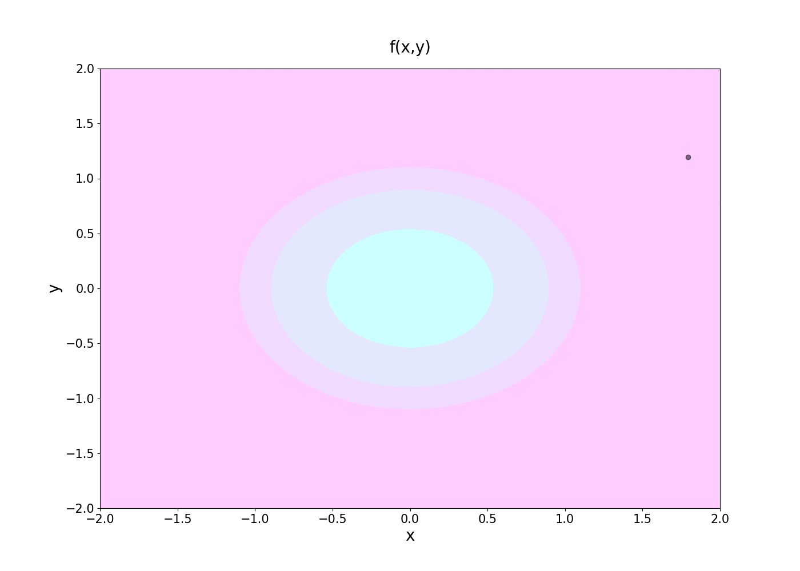
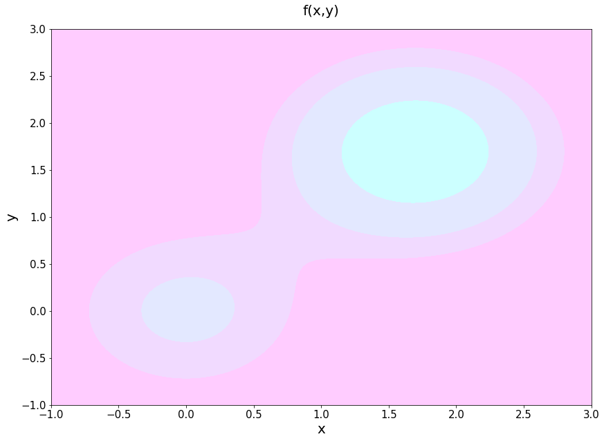
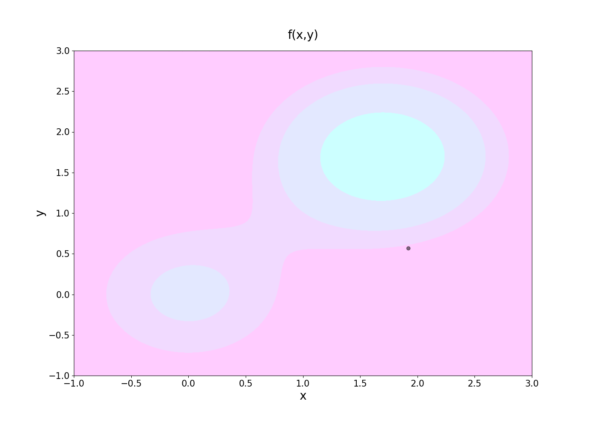

Hill-climbing optimisation
Global maximum
Let's try it with the function
\[ f(x,y) = e^{-\left(x^2+y^2\right)} \]import numpy as np
import matplotlib.pyplot as plt
from plotutils import *
x = np.linspace(-2.0, 2.0, 1000)
y = np.linspace(-2.0, 2.0, 1000)
X, Y = np.meshgrid(x, y)
Z = np.exp(-(X**2 + Y**2))
fig,ax=plt.subplots(1,1)
cp = ax.contourf(X, Y, Z, cmap=cmaps[1])
ax.set_title('f(x,y)')
ax.set_xlabel('x')
ax.set_ylabel('y')
plt.show()

from gradient_free_optimizers import HillClimbingOptimizer
search_space = {
"x": x,
"y": y,
}
opt = HillClimbingOptimizer(search_space)
def f(pos):
x = pos["x"]
y = pos["y"]
z = np.exp(-(x**2 + y**2))
return z
result = opt.search(f,
n_iter=30000,
verbosity=['print_times'],
random_state=23)
Evaluation time : 0.8271605968475342 sec [33.25 %]
Optimization time : 1.6604328155517578 sec [66.75 %]
Iteration time : 2.487593412399292 sec [12059.85 iter/sec]
opt.results
| score | x | y | eval_time | iter_time | |
|---|---|---|---|---|---|
| 0 | 0.010 | 1.792 | 1.195 | 0.000 | 0.000 |
| 1 | 0.015 | 1.888 | -0.815 | 0.000 | 0.000 |
| 2 | 0.411 | -0.667 | -0.667 | 0.000 | 0.000 |
| 3 | 0.411 | -0.667 | 0.667 | 0.000 | 0.000 |
| 4 | 0.411 | 0.667 | -0.667 | 0.000 | 0.000 |
| ... | ... | ... | ... | ... | ... |
| 29995 | 0.953 | 0.178 | 0.126 | 0.000 | 0.000 |
| 29996 | 0.981 | -0.138 | 0.018 | 0.000 | 0.000 |
| 29997 | 0.991 | -0.082 | 0.050 | 0.000 | 0.000 |
| 29998 | 0.995 | -0.058 | -0.038 | 0.000 | 0.000 |
| 29999 | 0.974 | 0.158 | 0.042 | 0.000 | 0.000 |
30000 rows × 5 columns

Local maximum
Let's try it with the function
\[ f(x,y) = e^{-\left(x^2+y^2\right)}+2e^{-\left((x-1.7)^2+(y-1.7)^2\right)} \]x = np.linspace(-1.0, 3.0, 1000)
y = np.linspace(-1.0, 3.0, 1000)
X, Y = np.meshgrid(x, y)
Z = np.exp(-(X**2 + Y**2))+2*np.exp(-((X-1.7)**2+(Y-1.7)**2))
fig,ax=plt.subplots(1,1)
cp = ax.contourf(X, Y, Z, cmap=cmaps[1])
ax.set_title('f(x,y)')
ax.set_xlabel('x')
ax.set_ylabel('y')
plt.show()

opt = HillClimbingOptimizer(search_space)
def f(pos):
x = pos["x"]
y = pos["y"]
z = np.exp(-(x**2 + y**2))+2*np.exp(-((x-1.7)**2+(y-1.7)**2))
return z
result = opt.search(f,
n_iter=30000,
verbosity=['print_times'],
random_state=23)
Evaluation time : 0.9191639423370361 sec [35.42 %]
Optimization time : 1.6756830215454102 sec [64.58 %]
Iteration time : 2.5948469638824463 sec [11561.38 iter/sec]
opt.results
| score | x | y | eval_time | iter_time | |
|---|---|---|---|---|---|
| 0 | 1.547 | 1.792 | 1.195 | 0.000 | 0.000 |
| 1 | 0.018 | 1.888 | -0.815 | 0.000 | 0.000 |
| 2 | 0.411 | -0.667 | -0.667 | 0.000 | 0.000 |
| 3 | 0.414 | -0.667 | 0.667 | 0.000 | 0.000 |
| 4 | 0.414 | 0.667 | -0.667 | 0.000 | 0.000 |
| ... | ... | ... | ... | ... | ... |
| 29995 | 1.915 | 1.872 | 1.820 | 0.000 | 0.000 |
| 29996 | 1.963 | 1.556 | 1.712 | 0.000 | 0.000 |
| 29997 | 1.984 | 1.612 | 1.744 | 0.000 | 0.000 |
| 29998 | 1.992 | 1.636 | 1.656 | 0.000 | 0.000 |
| 29999 | 1.954 | 1.852 | 1.736 | 0.000 | 0.000 |
30000 rows × 5 columns
